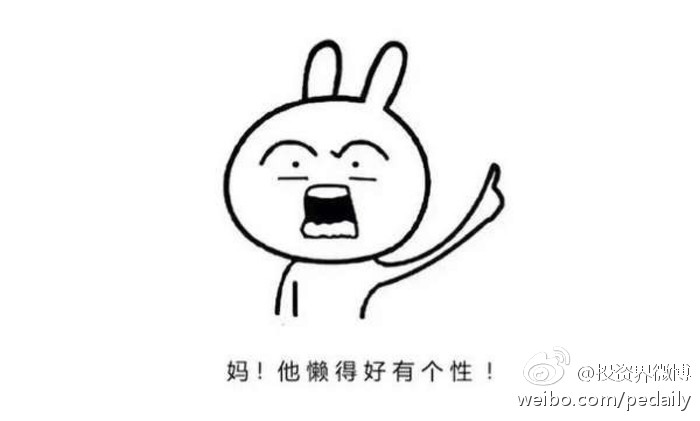

开个滴滴快车也可以算创业了吧，如果再顶个名校的光环。 //@繁芯流动:又一个开店的@投资界微博:【1988年生，北大美女学霸开餐厅，她被徐小平称为“沙拉女王”！】一路开过街边店、商场店、写字楼底商店，她说：“活了这么多年，各种tough的工作没少做，但真心觉得开店是最累也最有挑战的。”1988年生，北大美女学霸开餐厅，她被徐小平称为“沙拉女王”！ 
回复@catbert:据说徐小平投美女时决策特别迅速。//@catbert:感觉徐小平总投这种。。。//@Ada李力:开个滴滴快车也可以算创业了吧，如果再顶个名校的光环。 //@繁芯流动:又一个开店的@投资界微博:【1988年生，北大美女学霸开餐厅，她被徐小平称为“沙拉女王”！】一路开过街边店、商场店、写字楼底商店，她说：“活了这么多年，各种tough的工作没少做，但真心觉得开店是最累也最有挑战的。”1988年生，北大美女学霸开餐厅，她被徐小平称为“沙拉女王”！
我问姐姐对众筹一家美容机构如何看？按照1898咖啡馆的模式，股东均等，股东也是消费者，投资传唤成消费储植卡，股东参与分红。姐姐一句话就把我问住了：你要是想发起这么一家众筹机构，你出力你来操办操心，但收益大家均分，你从中获得了什么呢？所以@北大杨众筹 杨勇一再强调发起众筹的人先要做到无私，这大概才是最难的。 上海
从更高维度来审视和运作总筹而来的人和资源？//@北大杨众筹：全国有几十万个协会，做协会理事会长不仅没收益，还得多掏钱，动力在哪里呢@Ada李力:我问姐姐对众筹一家美容机构如何看？按照1898咖啡馆的模式，股东均等，股东也是消费者，投资传唤成消费储植卡，股东参与分红。姐姐一句话就把我问住了：你要是想发起这么一家众筹机构，你出力你来操办操心，但收益大家均分，你从中获得了什么呢？所以@北大杨众筹 杨勇一再强调发起众筹的人先要做到无私，这大概才是最难的。 上海
《中国式众筹》书里用“十八心法：做好众筹的内功修炼”对这部分做了更详细的阐述，在我看来，这章内容是全书最核心的内容。一些操作用来指导找合伙人，创业也是适用的。 查看图片@金融客咖啡:『金融客之声』金融客咖啡001号发起人杨勇—杨众筹最新众筹心法总结：众筹十八罗汉拳『金融客之声』金融客咖啡001号发起人杨勇—杨众筹最新众筹心法总结：众筹十八罗汉拳

 1988年生，北大美女学霸开餐厅，她被徐小平称为“沙拉女王”！
1988年生，北大美女学霸开餐厅，她被徐小平称为“沙拉女王”！